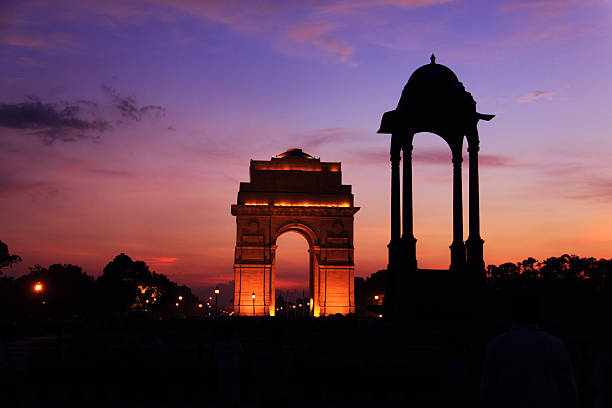
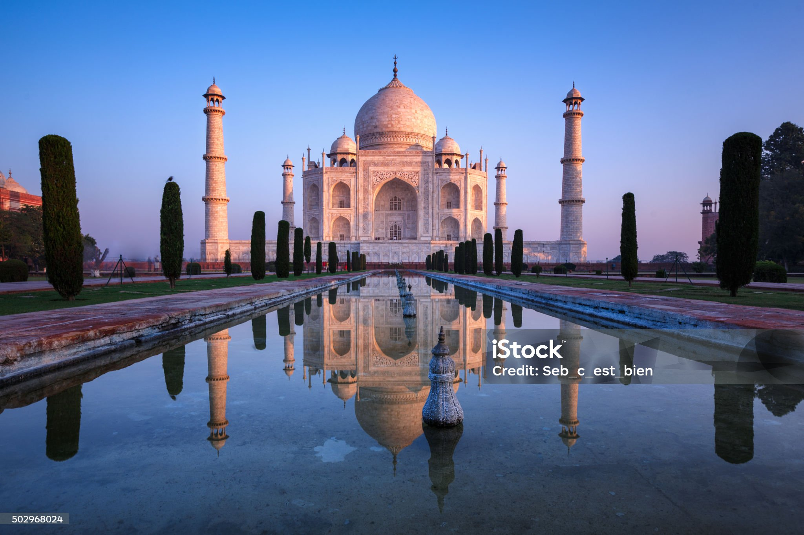
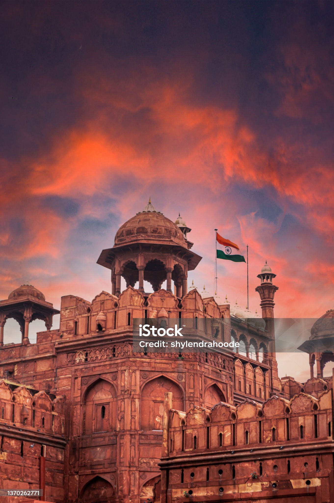

The Victoria Memorial is a large marble monument on the Maidan in Central Kolkata, having its entrance on the Queen's Way. It was built between 1906 and 1921 by the Government of India. It is dedicated to the memory of Queen Victoria, the Empress of India from 1876 to 1901.

Edwin Landseer Lutyens
DESIGN SLIDER
India Gate
Sir Edwin Landseer Lutyens OM KCIE PRA FRIBA was an English architect known for imaginatively adapting traditional architectural styles to the requirements of his era. He designed many English country houses, war memorials and public buildings.

Ustad Ahmad Lahori
DESIGN SLIDER
Tajmahal
The Taj Mahal is an ivory-white marble mausoleum on the right bank of the river Yamuna in Agra, Uttar Pradesh, India. It was commissioned in 1631 by the fifth Mughal emperor, Shah Jahan to house the tomb of his beloved wife, Mumtaz Mahal; it also houses the tomb of Shah Jahan himself.

Shah Jahan
DESIGN SLIDER
Lal Kila
The Red Fort Complex was built as the palace fort of Shahjahanabad – the new capital of the fifth Mughal Emperor of India, Shah Jahan. Named for its massive enclosing walls of red sandstone, it is adjacent to an older fort, the Salimgarh, built by Islam Shah Suri in 1546, with which it forms the Red Fort Complex. The private apartments consist of a row of pavilions connected by a continuous water channel, known as the Nahr-i-Behisht (Stream of Paradise). The Red Fort is considered to represent the zenith of Mughal creativity which, under the Shah Jahan, was brought to a new level of refinement. The planning of the palace is based on Islamic prototypes, but each pavilion reveals architectural elements typical of Mughal building, reflecting a fusion of Persian, Timurid and Hindu traditions The Red Fort’s innovative planning and architectural style, including the garden design, strongly influenced later buildings and gardens in Rajasthan, Delhi, Agra and further afield.